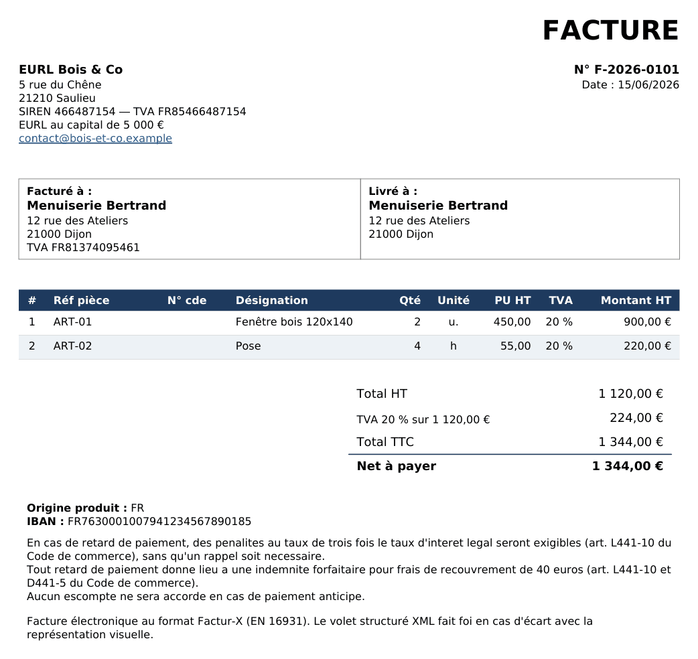

Factur-X : qu'est-ce que c'est et comment en générer une
Le format de facture électronique de référence pour les petites entreprises en France : un PDF qui se lit normalement, avec les données de la facture rangées à l'intérieur pour les logiciels.
L'essentiel
- Un seul fichier : un PDF/A-3 lisible et un XML embarqué, conforme à la norme EN 16931.
- Un des formats admis par la réforme française, avec UBL et CII.
- Vous n'écrivez jamais le XML : votre logiciel le produit à partir de vos données.
- Une plateforme agréée le transmet ensuite à votre client.
Un PDF lisible + des données structurées
La partie visible (PDF/A-3)
La facture telle que vous et votre client la voyez, à l'écran ou imprimée.
La partie structurée (XML)
Les mêmes informations en données normalisées (EN 16931), lues par les logiciels et l'administration.
Une vraie Factur-X, ouverte en deux
Une facture produite par Solynov Bridge pendant nos essais, sur des données fictives. À gauche, le PDF ; à droite, le XML embarqué dans le même fichier. Les valeurs surlignées se correspondent.

<rsm:CrossIndustryInvoice xmlns:rsm="…" xmlns:ram="…" xmlns:udt="…"> <rsm:ExchangedDocumentContext> <ram:GuidelineSpecifiedDocumentContextParameter> <ram:ID>urn:cen.eu:en16931:2017</ram:ID> </ram:GuidelineSpecifiedDocumentContextParameter> </rsm:ExchangedDocumentContext> <rsm:ExchangedDocument> <ram:ID>F-2026-0101</ram:ID> <ram:TypeCode>380</ram:TypeCode> <ram:IssueDateTime> <udt:DateTimeString format="102">20260615</udt:DateTimeString> </ram:IssueDateTime> <!-- … 4 mentions : pénalités de retard, indemnité de 40 €, escompte, B2B --> </rsm:ExchangedDocument> <rsm:SupplyChainTradeTransaction> <ram:IncludedSupplyChainTradeLineItem> <ram:AssociatedDocumentLineDocument> <ram:LineID>1</ram:LineID> </ram:AssociatedDocumentLineDocument> <ram:SpecifiedTradeProduct> <ram:Name>Fenêtre bois 120x140</ram:Name> <ram:OriginTradeCountry> <ram:ID>FR</ram:ID> </ram:OriginTradeCountry> </ram:SpecifiedTradeProduct> <ram:SpecifiedLineTradeAgreement> <ram:NetPriceProductTradePrice> <ram:ChargeAmount>450.00</ram:ChargeAmount> </ram:NetPriceProductTradePrice> </ram:SpecifiedLineTradeAgreement> <ram:SpecifiedLineTradeDelivery> <ram:BilledQuantity unitCode="C62">2</ram:BilledQuantity> </ram:SpecifiedLineTradeDelivery> <ram:SpecifiedLineTradeSettlement> <ram:ApplicableTradeTax> <ram:TypeCode>VAT</ram:TypeCode> <ram:CategoryCode>S</ram:CategoryCode> <ram:RateApplicablePercent>20.00</ram:RateApplicablePercent> </ram:ApplicableTradeTax> <ram:SpecifiedTradeSettlementLineMonetarySummation> <ram:LineTotalAmount>900.00</ram:LineTotalAmount> </ram:SpecifiedTradeSettlementLineMonetarySummation> </ram:SpecifiedLineTradeSettlement> </ram:IncludedSupplyChainTradeLineItem> <!-- … ligne 2 : Pose, 4 h à 55.00 = 220.00 --> <ram:ApplicableHeaderTradeAgreement> <ram:SellerTradeParty> <ram:Name>EURL Bois & Co</ram:Name> <ram:Description>EURL au capital de 5 000 €</ram:Description> <ram:SpecifiedLegalOrganization> <ram:ID schemeID="0002">466487154</ram:ID> </ram:SpecifiedLegalOrganization> <!-- … e-mail, adresse postale, adresse électronique --> <ram:SpecifiedTaxRegistration> <ram:ID schemeID="VA">FR85466487154</ram:ID> </ram:SpecifiedTaxRegistration> </ram:SellerTradeParty> <ram:BuyerTradeParty> <ram:Name>Menuiserie Bertrand</ram:Name> <ram:SpecifiedLegalOrganization> <ram:ID schemeID="0002">374095461</ram:ID> </ram:SpecifiedLegalOrganization> <!-- … adresse postale, adresse électronique --> <ram:SpecifiedTaxRegistration> <ram:ID schemeID="VA">FR81374095461</ram:ID> </ram:SpecifiedTaxRegistration> </ram:BuyerTradeParty> </ram:ApplicableHeaderTradeAgreement> <!-- … livraison : Menuiserie Bertrand, Dijon, le 20260615 --> <ram:ApplicableHeaderTradeSettlement> <ram:InvoiceCurrencyCode>EUR</ram:InvoiceCurrencyCode> <!-- … virement sur l'IBAN FR76 3000 1007 …, paiement à réception --> <ram:ApplicableTradeTax> <ram:CalculatedAmount>224.00</ram:CalculatedAmount> <ram:TypeCode>VAT</ram:TypeCode> <ram:BasisAmount>1120.00</ram:BasisAmount> <ram:CategoryCode>S</ram:CategoryCode> <ram:RateApplicablePercent>20.00</ram:RateApplicablePercent> </ram:ApplicableTradeTax> <ram:SpecifiedTradeSettlementHeaderMonetarySummation> <ram:LineTotalAmount>1120.00</ram:LineTotalAmount> <ram:TaxBasisTotalAmount>1120.00</ram:TaxBasisTotalAmount> <ram:TaxTotalAmount currencyID="EUR">224.00</ram:TaxTotalAmount> <ram:GrandTotalAmount>1344.00</ram:GrandTotalAmount> <ram:DuePayableAmount>1344.00</ram:DuePayableAmount> </ram:SpecifiedTradeSettlementHeaderMonetarySummation> </ram:ApplicableHeaderTradeSettlement> </rsm:SupplyChainTradeTransaction> </rsm:CrossIndustryInvoice>
Télécharger cette facture (PDF Factur-X, 49 Ko) pour l'ouvrir ou la passer au validateur de la FNFE-MPE. Les « … » signalent les passages du XML raccourcis ici.
Comment générer une Factur-X conforme
Vous n'avez pas à fabriquer le XML : SOLYNOV le produit à partir de vos données.
Renseignez
Saisie dans Starter, ou exports de votre gestion lus par Bridge.
Générez
Le fichier Factur-X (PDF/A-3 + XML), conforme EN 16931.
Vérifiez
Contrôle automatique ; validation possible chez FNFE-MPE et Mustangproject.
Ensuite, il reste à transmettre : que faire de vos Factur-X.
Questions fréquentes
Qu'est-ce que le format Factur-X ?
Factur-X est le format franco-allemand de facture électronique hybride : un PDF/A-3 lisible par l'humain, auquel est associé un fichier XML de données structurées conforme à la norme européenne EN 16931. La facture reste lisible à l'écran tout en étant exploitable automatiquement par les logiciels.
Quelle différence entre un PDF classique et une Factur-X ?
Un PDF classique n'est qu'une image de la facture pour la machine. Une Factur-X contient en plus les données structurées (XML) que les logiciels et l'administration peuvent lire automatiquement. C'est cette partie structurée qu'exige la réforme.
Comment générer une facture Factur-X ?
Vous n'avez pas besoin de créer le XML à la main. Un logiciel comme SOLYNOV génère la Factur-X conforme à partir de vos données (saisies dans SOLYNOV, ou lues dans les exports de votre gestion) et vérifie sa conformité à la norme EN 16931 automatiquement.
Pour aller plus loin : l'obligation 2026-2027 · que faire de vos Factur-X · aide et FAQ